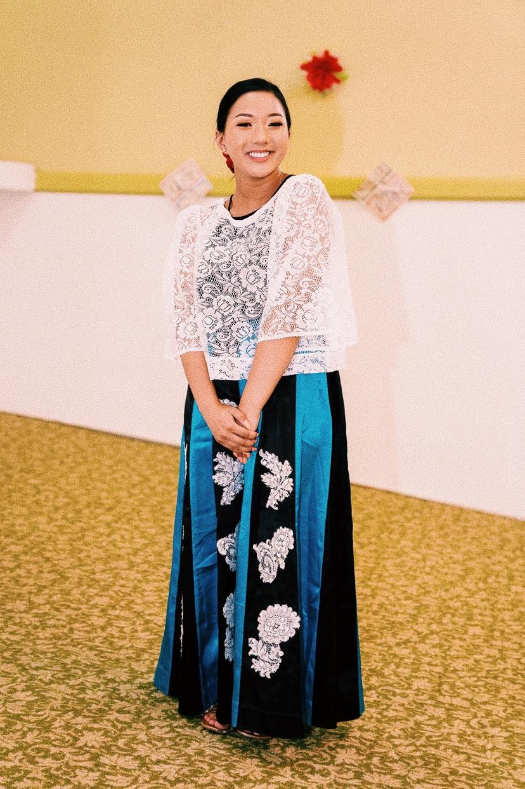

Hi there, I'm Frannie!
I am Seattle-based Product Designer studying Human Centered Design & Engineering at the University of Washington.
Empowering communities is a passion of mine, and I believe that the intersection of this passion and my interests in user-centered design
can help break down barriers that prevent technology from being accessible. My interests include EdTech and Healthcare, where I hope to apply
my research experience in children's technology to product design.
As for my hobbies, you can find me binge watching the latest anime, whipping up a storm in the kitchen, or out bowling!